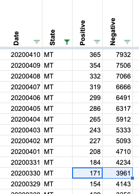
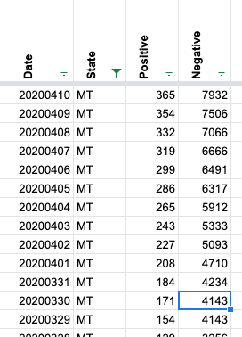
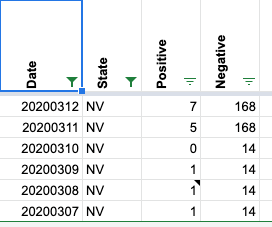
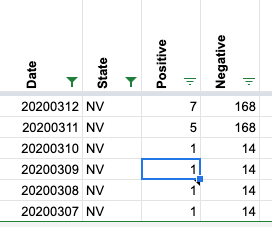
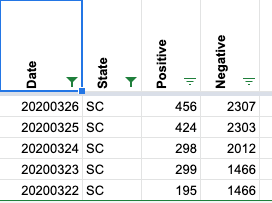
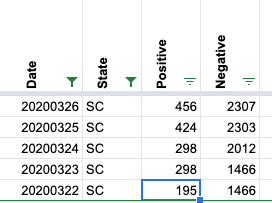
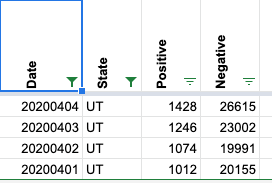
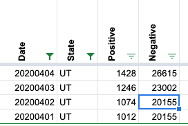
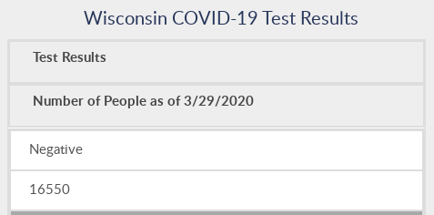
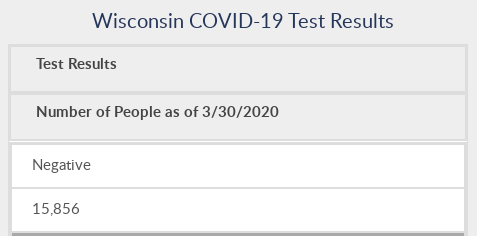

All cases when states report fewer (cumulative) totals than the day before
MI reported fewer negative on 2020-03-20 than on 2020-03-19 MI reported fewer negative on 2020-03-21 than on 2020-03-20 MI reported fewer negative on 2020-03-22 than on 2020-03-21 MI reported fewer negative on 2020-03-23 than on 2020-03-22 MI reported fewer negative on 2020-03-24 than on 2020-03-23 MI reported fewer negative on 2020-03-25 than on 2020-03-24 MT reported fewer negative on 2020-03-30 than on 2020-03-29 MT reported fewer totalTestResults on 2020-03-30 than on 2020-03-29 NV reported fewer positive on 2020-03-10 than on 2020-03-09 NV reported fewer totalTestResults on 2020-03-10 than on 2020-03-09 SC reported fewer positive on 2020-03-24 than on 2020-03-23 UT reported fewer negative on 2020-04-02 than on 2020-04-01 UT reported fewer totalTestResults on 2020-04-02 than on 2020-04-01 WI reported fewer negative on 2020-03-30 than on 2020-03-29 WI reported fewer totalTestResults on 2020-03-30 than on 2020-03-29
These may be cases where rows were swapped.
These are all the cases up through today’s report (4/3).
-
[ ] Michigan Data update was derived from improved data reporting by the state. Please see #173 for additional details
-
[ ] Montana Looks like the positives updated while the state did not update the total tested at the same rate.
-
Before 
-
After 
-
[ ] Nevada Looks like the positives updated while the state did not update the total tested at the same rate.
-
Before 
-
After 
-
[ ] South Carolina Erroneous data entry on 3/23
Before 
After 
- [ ] Utah Lag in reporting on total tests resulted in incorrect math on 4/1
Before 
After 
- [ ] Wisconsin Reported the same data you can find on our site. It looks like the numbers are reversed, but it would be difficult to write tomorrow’s numbers today. I am going to leave WI for the time being.
Screen capture from 3/29 
Screen capture from 3/30 
@realfuture any ideas?
This issue has been automatically marked as stale because it has not had recent activity. It will be closed if no further activity occurs. Thank you for your contributions!
This issue has been closed because it was stale for 15 days, and there was no further activity on it for 10 days. You can feel free to re-open it if the issue is important, and label it as “not stale.”
@joshuaellinger @Erin-Boehmer I’m guessing you’re already including these checks in the QA work but forwarding just in case